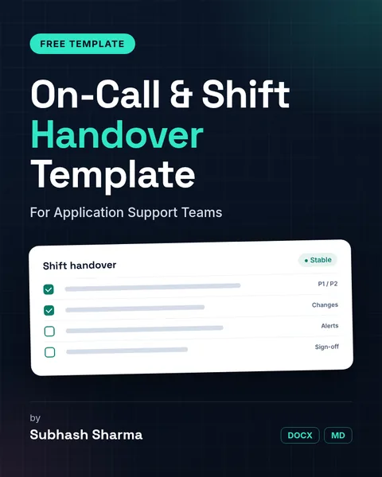

Cheat sheet
AWS Explained Simply
A plain-English guide to 40 must-know AWS services.
Resources
Plain-English cheat sheets and practical templates by Subhash Sharma, free to download.
Cheat sheet
A plain-English guide to 40 must-know AWS services.
Cheat sheet
Covers the core concepts and 40+ everyday kubectl commands.
Cheat sheet
A 14-page plain-English first-week guide to Dynamics 365 Finance & Operations: key terms, the screen, everyday journal, voucher and PO tasks, shortcuts, Copilot and common beginner mistakes.

Template
A template for application support teams to fill in at every shift change or on-call handover.